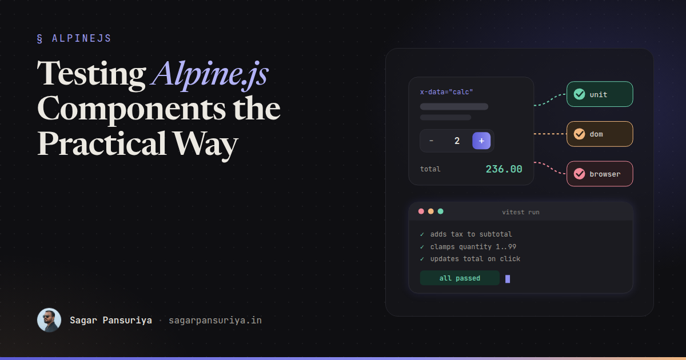
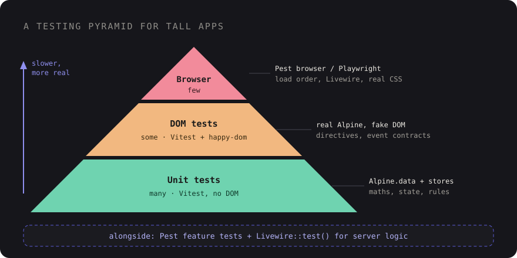

Testing Alpine.js Components: Unit, DOM and Browser Tests for TALL Apps


Picture a Laravel app with a healthy test suite. Hundreds of feature tests, every controller covered,
Livewire components tested with Livewire::test(). Then someone renames a property in an
Alpine component, the price calculator on the checkout page starts showing NaN, and not a
single test goes red. PHP tests can't see JavaScript, and the JavaScript was never tested at all.
Alpine gets skipped in testing plans because it feels too small to test. It's a few attributes in a Blade file, after all. But in most TALL apps I've worked on, the Alpine layer quietly grows into real logic: cart totals, multi-step forms, filters, keyboard navigation. That logic deserves tests, and the good news is that Alpine is very easy to test once you structure it for that.
What's actually worth testing
Not every x-data="{ open: false }" needs a test. Toggling a boolean is Alpine's job, and
Alpine has its own test suite. Focus on the code you wrote:
- Logic: calculations, validation rules, state transitions, formatting, sorting and filtering.
- Wiring: the right directive on the right element, so that clicking the button really changes the state and the state really shows up in the DOM.
- Contracts: events you dispatch that other components listen for, and stores that several components share.
- Integration: Alpine talking to Livewire, the server, or the rest of the page in a real browser.
Each of those maps to a different kind of test, and the cheapest one that can catch the bug is the right one.

Step one: get logic out of your Blade files
You can't unit test a JavaScript object that only exists as a string inside an HTML attribute. So the
first move is structural: anything beyond a one-liner goes into Alpine.data() in its own
module, exported as a plain function.
// resources/js/components/price-calculator.js
export default function priceCalculator({ unitPrice = 0, taxRate = 0 } = {}) {
return {
quantity: 1,
coupon: null,
unitPrice,
taxRate,
get subtotal() {
return this.unitPrice * this.quantity;
},
get discount() {
if (!this.coupon) return 0;
return this.coupon.type === 'percent'
? this.subtotal * (this.coupon.value / 100)
: Math.min(this.coupon.value, this.subtotal);
},
get total() {
const taxable = this.subtotal - this.discount;
return Math.round(taxable * (1 + this.taxRate) * 100) / 100;
},
increment() {
this.quantity = Math.min(this.quantity + 1, 99);
},
decrement() {
this.quantity = Math.max(this.quantity - 1, 1);
},
};
}// resources/js/app.js
import Alpine from 'alpinejs';
import priceCalculator from './components/price-calculator';
Alpine.data('priceCalculator', priceCalculator);
window.Alpine = Alpine;
Alpine.start();The Blade side stays tiny and declarative:
<div x-data="priceCalculator({ unitPrice: @js($product->price), taxRate: 0.18 })">
<button type="button" @click="decrement()" aria-label="Decrease quantity">−</button>
<span x-text="quantity" data-test="quantity"></span>
<button type="button" @click="increment()" aria-label="Increase quantity">+</button>
<p>Total: <span x-text="total.toFixed(2)" data-test="total"></span></p>
</div>This refactor pays for itself even before you write a test. The component gets a name, it can be reused, your editor understands it, and the Blade file becomes readable again.
Unit tests with Vitest: plain objects, no DOM
Vitest fits naturally into a Laravel project because it uses your existing Vite setup. Install it as a
dev dependency and add a test script to package.json. Because the component is
just a function that returns an object, you can call it and assert on the result. No Alpine, no
browser:
// resources/js/components/price-calculator.test.js
import { describe, it, expect } from 'vitest';
import priceCalculator from './price-calculator';
describe('priceCalculator', () => {
it('adds tax to the subtotal', () => {
const calc = priceCalculator({ unitPrice: 100, taxRate: 0.18 });
calc.quantity = 2;
expect(calc.total).toBe(236);
});
it('never discounts below zero with a fixed coupon', () => {
const calc = priceCalculator({ unitPrice: 20 });
calc.coupon = { type: 'fixed', value: 50 };
expect(calc.discount).toBe(20);
expect(calc.total).toBe(0);
});
it('keeps quantity between 1 and 99', () => {
const calc = priceCalculator({ unitPrice: 10 });
calc.decrement();
expect(calc.quantity).toBe(1);
calc.quantity = 99;
calc.increment();
expect(calc.quantity).toBe(99);
});
});These run in milliseconds, so you can have hundreds of them. This is where the bulk of your Alpine tests should live.
Dealing with magics like $dispatch and $refs
Inside a component, Alpine gives this access to magic properties such as
$dispatch, $refs, $watch and $nextTick. In a unit
test there's no Alpine to provide them, so you provide them yourself:
import { it, expect, vi } from 'vitest';
import cartButton from './cart-button';
it('announces the added item', () => {
const component = Object.assign(cartButton({ productId: 42 }), {
$dispatch: vi.fn(),
});
component.add();
expect(component.$dispatch).toHaveBeenCalledWith('cart:added', { productId: 42 });
});If a component needs a lot of stubbing, treat it as a hint. Pull the pure logic out into a separate
function (say, calculateDiscount()) that the component calls, and unit test that function
directly. The component itself then gets covered by a DOM test.
DOM tests: is the wiring right?
Unit tests prove the logic. They don't prove that @click is on the right button or that
x-text points at total and not subtotal. For that, run real Alpine
against a simulated DOM. Vitest supports both happy-dom and jsdom as test
environments. I reach for happy-dom first because it's lighter; jsdom is the more complete fallback if
something isn't supported.
// vitest.config.js
import { defineConfig } from 'vitest/config';
export default defineConfig({
test: {
environment: 'happy-dom',
setupFiles: ['./resources/js/tests/setup.js'],
},
});Alpine can only be started once per page, and it initialises new elements added to the DOM after it starts. That gives you a simple pattern: start Alpine once in a setup file, then have each test inject its own markup.
// resources/js/tests/setup.js
import Alpine from 'alpinejs';
import priceCalculator from '../components/price-calculator';
Alpine.data('priceCalculator', priceCalculator);
window.Alpine = Alpine;
Alpine.start();
// resources/js/tests/helpers.js
export const tick = () => new Promise((resolve) => setTimeout(resolve, 0));
export async function mount(html) {
document.body.innerHTML = html;
await tick(); // let Alpine pick up the new elements
return document.body;
}// resources/js/components/price-calculator.dom.test.js
import { it, expect, afterEach } from 'vitest';
import { mount, tick } from '../tests/helpers';
afterEach(() => { document.body.innerHTML = ''; });
it('updates the total when quantity increases', async () => {
const root = await mount(`
<div x-data="priceCalculator({ unitPrice: 100, taxRate: 0 })">
<button type="button" @click="increment()" aria-label="Increase quantity">+</button>
<span x-text="total.toFixed(2)" data-test="total"></span>
</div>
`);
root.querySelector('[aria-label="Increase quantity"]').click();
await tick();
expect(root.querySelector('[data-test="total"]').textContent).toBe('200.00');
});Alpine applies DOM updates asynchronously, which is why every interaction is followed by an
await tick(). Forgetting it is the number one cause of "the test sees the old value"
confusion.
One honest limitation: the markup in the test is a copy of your Blade template, not the template itself, so the two can drift. Keep DOM tests focused on the parts where wiring mistakes are likely, and let browser tests cover the real rendered page.
Testing stores and events
Stores are the easiest thing in Alpine to test, as long as you export the store object before registering it:
// resources/js/stores/cart.js
export const cartStore = () => ({
items: [],
get count() {
return this.items.reduce((sum, item) => sum + item.qty, 0);
},
add(id) {
const item = this.items.find((i) => i.id === id);
item ? item.qty++ : this.items.push({ id, qty: 1 });
},
});
// app.js
Alpine.store('cart', cartStore());Exporting a factory rather than a single object means every unit test gets a fresh store, with no state
leaking between tests. In DOM tests, where the real store is registered once, reset it in a
beforeEach by clearing its state through Alpine.store('cart').
For events, test both ends of the contract. The sender is covered by the $dispatch stub
shown above. The receiver can be tested in the DOM by dispatching a real event. Alpine's
$dispatch fires a bubbling CustomEvent with your data in
detail, so you can simulate it the same way:
it('shows a badge when an item is added elsewhere', async () => {
const root = await mount(`
<div x-data="{ count: 0 }" @cart:added.window="count++">
<span x-text="count" data-test="badge"></span>
</div>
`);
window.dispatchEvent(new CustomEvent('cart:added', { detail: { productId: 42 } }));
await tick();
expect(root.querySelector('[data-test="badge"]').textContent).toBe('1');
});Event names are an API between components. A short list of them in a constants file, imported by both
the sender and the tests, prevents the classic typo where one side dispatches cart-added
and the other listens for cart:added.
End-to-end: a few journeys in a real browser
Some bugs only exist in the real page: a script loading in the wrong order, Alpine and Livewire disagreeing about who owns an element, a CSS rule hiding the button you just tested. That's the job of browser tests, and in a Laravel app Pest's browser testing makes them feel like any other test. I covered the setup in Pest browser testing for Laravel frontends, so here's just the Alpine-flavoured version:
it('updates the checkout total', function () {
$product = Product::factory()->create(['price' => 100]);
visit("/products/{$product->slug}")
->click('[aria-label="Increase quantity"]')
->assertSee('236.00')
->assertNoJavascriptErrors();
});If your team prefers Playwright directly, the same test in TypeScript looks much the same, using
role-based locators like page.getByRole('button', { name: 'Increase quantity' }). Either
way, keep this layer thin: a handful of critical journeys, not a test per component.
A testing pyramid for TALL apps
| Layer | Tool | Tests | Catches |
|---|---|---|---|
| Unit | Vitest | Many | Wrong maths, bad state transitions, store bugs |
| DOM | Vitest + happy-dom | Some | Missing or wrong directives, event contracts |
| Browser | Pest browser / Playwright | Few | Load order, Livewire interplay, real CSS |
| PHP | Pest feature / Livewire::test() | Many | Server logic, validation, authorisation |
The PHP row sits beside the pyramid rather than inside it. It's your server-side safety net, and you should already have it. The three JavaScript layers are what most TALL projects are missing.
Takeaways
- Move anything beyond a one-liner into
Alpine.data()modules that export plain functions. - Unit test logic with Vitest by calling the function. Stub magics like
$dispatchwithvi.fn(). - Use a happy-dom environment, start Alpine once in a setup file, and
awaita tick after every interaction. - Export stores as factories so every test gets fresh state.
- Treat event names as an API and test both the sender and the receiver.
- Keep browser tests for a few critical journeys, and always assert there are no JavaScript errors.
- Run
vitest runin CI next to Pest, so a broken Alpine component fails the build like a broken controller does.
Start with the component that scares you most, the one nobody wants to touch before a release.
Extract it, give it five unit tests, and the next rename will turn a test red instead of turning a
checkout total into NaN.
Discussion